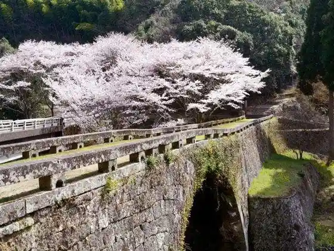
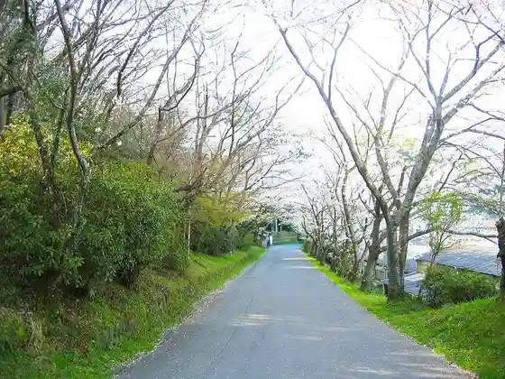
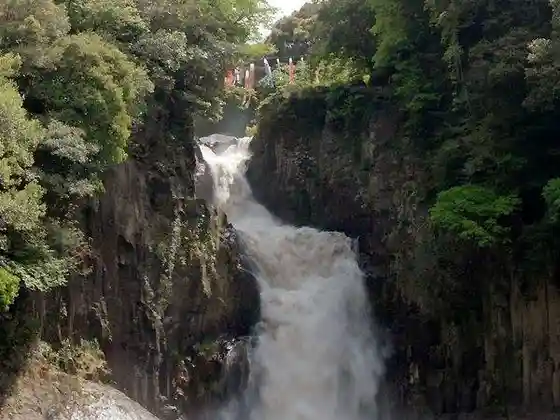
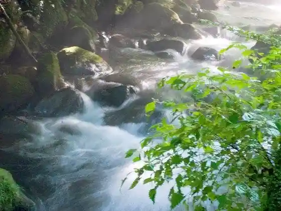

Hachi Sei Me Kan Hashi
Mifune, Kumamoto · 096-288-1226 · Official / source link

Myoken Saka Park
Mifune, Kumamoto · 096-282-1607 · Official / source link

Shichi Taki
Mifune, Kumamoto · 096-282-1607 · Official / source link

Kichi Mu Tamizu Gen
Mifune, Kumamoto · Official / source link

Shiroyama Park
Mifune, Kumamoto · 096-282-1226 · Official / source link
Mifune Machi Naka Gyararii
Mifune, Kumamoto · 096-282-1226 · Official / source link
Kichi Mu Tako Hara Midori no Village
Mifune, Kumamoto · 096-285-2210 · Official / source link
Mifune Kyoryu Museum
Mifune, Kumamoto · 096-282-4051 · Official / source link
Mifune Kanko Koryu Center
Mifune, Kumamoto · 096-282-4700 · Official / source link
Gyararii Resutoran Yu Wa
Mifune, Kumamoto · 096-282-0428 · Official / source link
Higurashi (Higurashi) Kama
Mifune, Kumamoto · 096-285-2426 · Official / source link
Ichido Kama
Mifune, Kumamoto · 096-282-0578 · Official / source link
to En Mifune Kama
Mifune, Kumamoto · 096-282-6783 · Official / source link
Kichi Mu Tamizu Gen Pan Workshop Uraraka sun
Mifune, Kumamoto · 096-285-2052 · Official / source link
Burukku Zo
Mifune, Kumamoto · 096-282-1226 · Official / source link
TheDay.
Mifune, Kumamoto · 070-5026-3515 · Official / source link
Monzen Kawame Kan Hashi
Mifune, Kumamoto · Official / source link